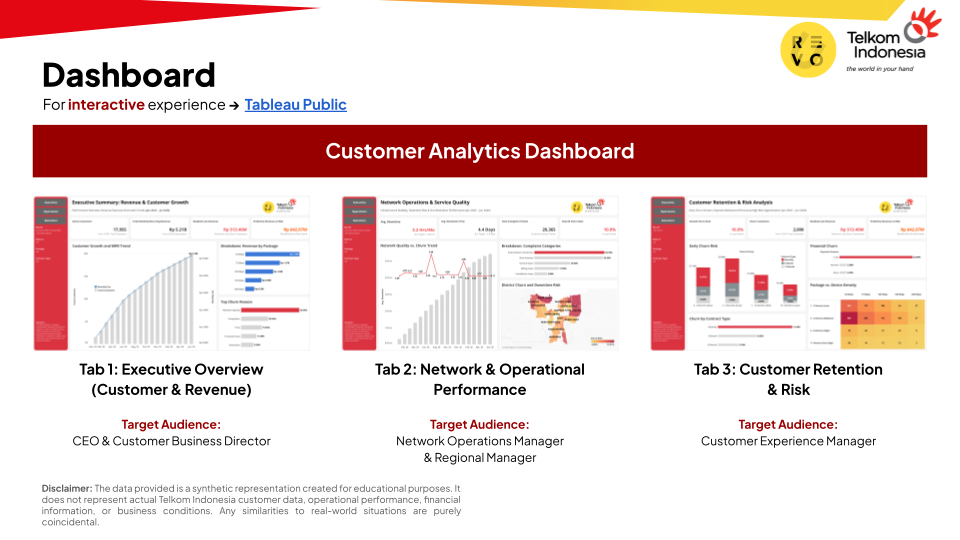

Telkom Indonesia faced a 10% customer churn rate across DKI Jakarta residential broadband customers, resulting in Rp 513.40M in lost revenue. Due to fragmented data monitoring, business teams struggled to quickly isolate downtime issues, contract vulnerabilities, and high-risk customer segments.